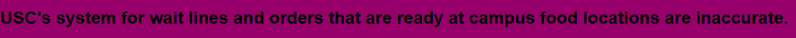

About me
My career mission is to be the future of computer hardware. I enjoy working with technology and enjoy working with my hands. In addition to that, I am good at math, so naturally my dream job is Computer Engineering. I want a job that I can have fun with and make gaming PCs that others can have fun with too.
Skills
Problem Statement

USC's system for wait lines and orders that are ready at campus food locations are inaccurate.
Problem Statement

USC's system for wait lines and orders that are ready at campus food locations are inaccurate.
Affinity Diagram

This diagram displays the layout and functions of the app designed to fix this problem
Sketches

One shows the Layout of the entire app. The others show the layout of the app when used by a student, manager, employee, and professor.
| Resume - Joseph Lopez | |
|---|---|
| Personal Information |
Name: Joseph Lopez Location: Elgin, SC Email: JML31@email.sc.edu Website: https://gamerjo411.github.io/ |
| Education |
University: University of South Carolina - Columbia Location: Columbia, SC Year: Freshman (May 2029) Degree: Bachelor of Engineering in Computer Engineering Minor: Jazz Studies GPA: 3.2 Honors: National Honors Society, National Technical Honors Society, Life Scholarship Certifications: TestOut Cybersecurity, TestOut Computer Repair and Service |
| Experience |
Work: • None Relevant Experience: • Worked at Bojangles and built teamwork and communication skills • Participated in Marching Band; developed teamwork, critical thinking, communication, self-evaluation, and performance skills |
| Skills |
• English, Spanish • 9 years saxophone experience • Computer repair (Windows, Mac, Linux) • Knowledge of motherboard configuration • Ethical hacking (Windows & Linux) • Networking (Server configuration/wiring) • Ethernet cable construction • Java • Python |